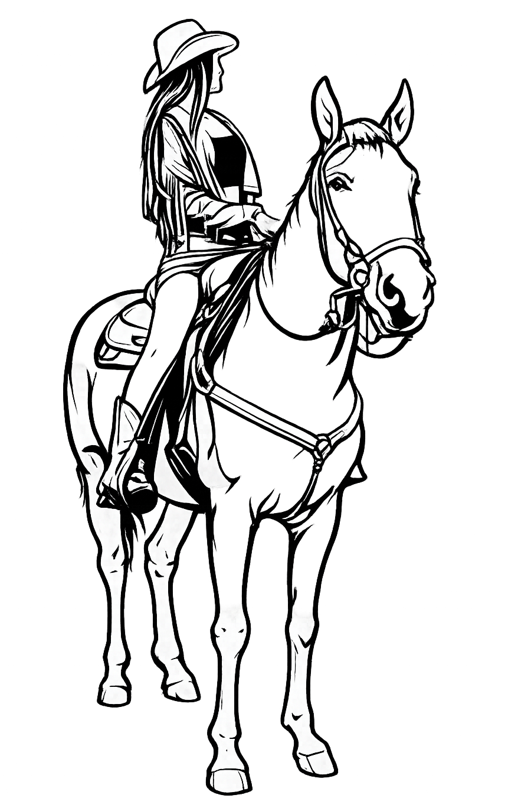

Ranch
Monty
Rodinný ranč, kde nájdete krásne miesto, pokoj, prírodu a lásku ku koňom.
Jazdy pre deti
Bezpečné a príjemné zoznámenie s koňmi, na ktoré budú deti dlho spomínať.
Výjazdové jazdy
Objavte okolitú prírodu zo sedla koňa a užite si pokoj, slobodu a nezabudnuteľné výhľady.
Krásna príroda
Miesto obklopené zeleňou, pokojom a priestorom, kde môžete na chvíľu uniknúť od každodenného ruchu.
Naše kone
Srdcom nášho ranča sú kone, o ktoré sa staráme s láskou a ktoré sú neoddeliteľnou súčasťou našej rodiny.

Z lásky ku koňom
Kone a príroda sú neoddeliteľnou súčasťou môjho života. Tento ranč vznikol z lásky ku koňom a túžby vytvoriť miesto, kde sa každý môže cítiť príjemne, oddýchnuť si a zažiť krásne chvíle v sedle.
Napíšte nám Rezervovať jazdu